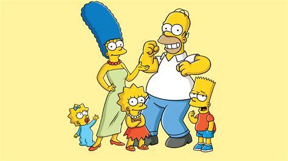
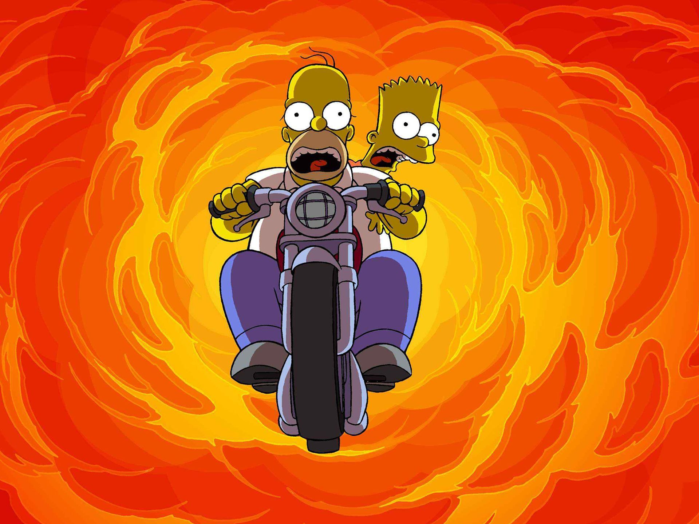
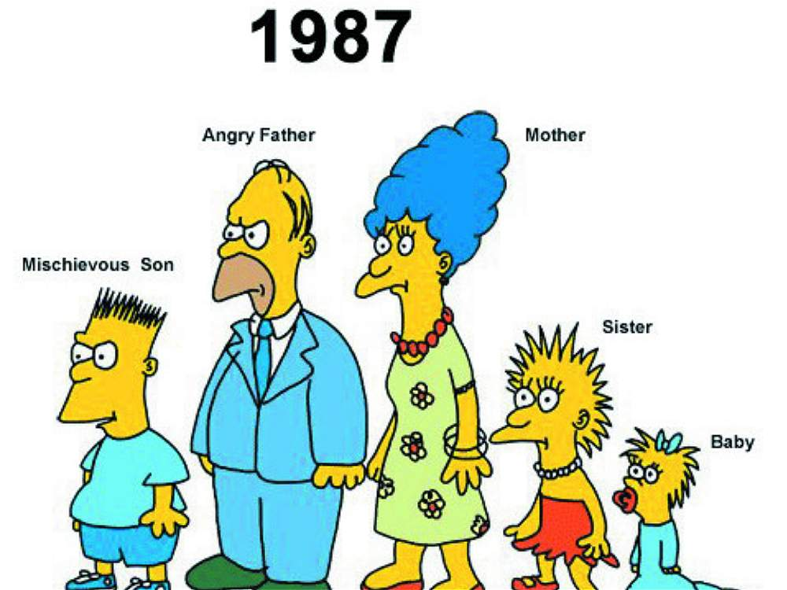

programacion mas visto

los simpson son , sin dudas la serie mas mitica de la historia de la television y a este paso lo sera
siempre . en 2022 se cumpliran nadaq menos que 33 años desde su primera emision . reconocible por
practicamente todo el mundo , son famosas las frases y situaciones que repetimos en mnuestro dia dia ,
ademas de su curioso poder de prediccion. Por eso , hoy tge traemos las guias mas completa de los
simpson
con la que incluso aprenderas algunas cosas que , seguramente , no conoces.
Es la serie mas citada , que mas dura en la television y a marcado tambien a multitud de generaciones,
es
posible que , si hay algo que todos tenemos en comun sean los simpson.
primer programa

El 17 de diciembre de 1989, la historia de la series animadas, y de una parte importante de la cultura
occidental, cambio para siempre durante esta jornada en EE.UU, se estreno el primer episodio de los simpson
como
serie ya constituida , es decir dejando atras los famosos cortos con los que se preseneto a la familia de
sprinfield en the tracey ullman show .
En este sentido hay que recordar que el primer episodio de todos es ni mas ni menos que un especial de
navidad,
algo que es habitual en los programas estadosunidenses pero para el momento en que ya esta instalado en la
audiencia , la respecto hay que decir que no fue algo intencional, sino que mas bien se trato de un hecho
azaroso o de la vueltas del destino . Fue asi como el capitulo que pasaria a la historia como el puntapie
inicial para homero y marge y compañia termino siendo el especial de navidad de los simpson tambien conocido
como sin blanca navidad.

la mejor animacion
groening creo una familia disfuncional y nombro a su personajes en honor a los miembro de su propia
familia
,sustituyendo su nombre por bart, los corto pasaron a formar parte de el show de tracey ullman el 19 de
abril de 1987 pero despues de tres temporadas se decidio convertirlos en una serie de episodio de media
hora
en horario de maxima audiencia , constituyo un exito de la cadena fox y fue la primera serie de este
canal
en llegar a estar entre los 30 programas mas visto en la temporada 1992-1993 en ee.uu.
desde su debut el 17 de diciembre de 1989 se han emitido mas de 700 episodios habiendo iniciado su
trigresimosegunda temporada , en el final de la decimoctava temporada el 20 de mayo de 2007 se emitio en
estados unidos el episodio 400 los simosons ha ganadonumeroso premios desde su estreno como serie
incluyendo
33 premios emmy los simpsons es una de las series de dibujo animados de mayor duracion y el programa
estadounidense de animacion mas larga